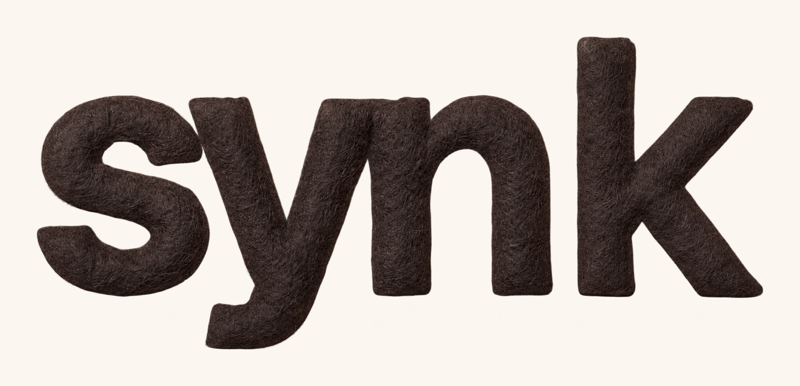
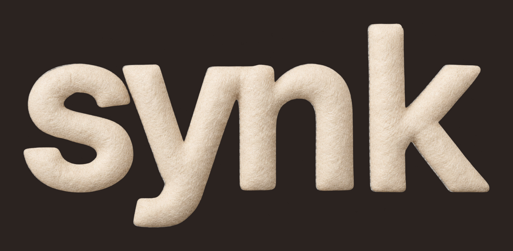
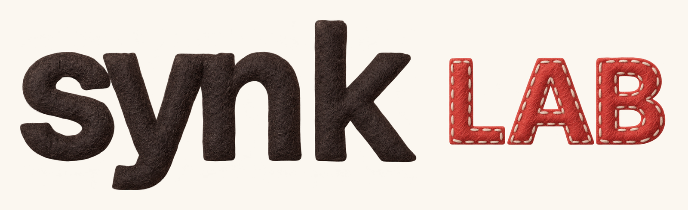
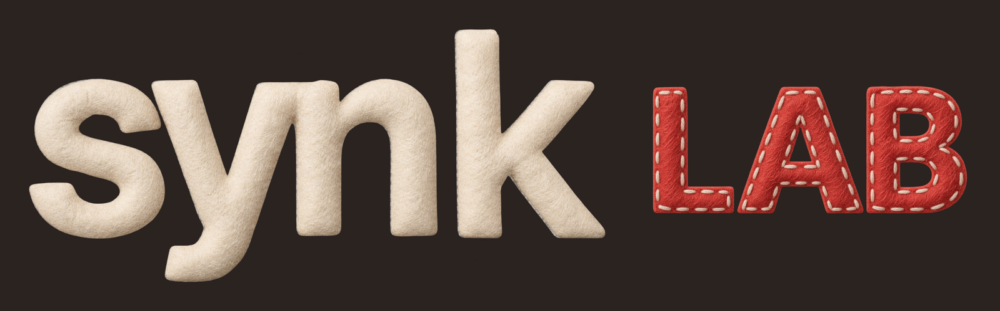
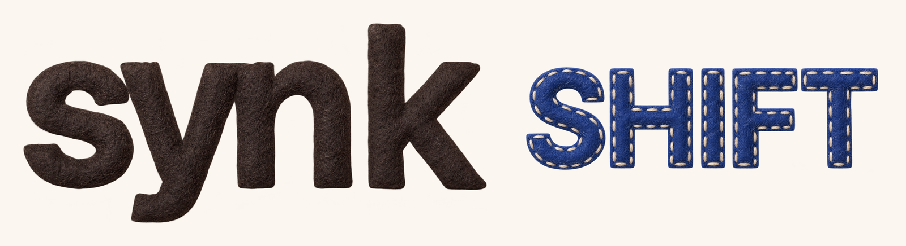
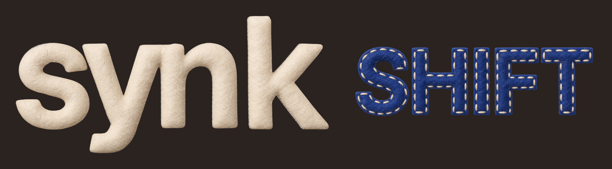
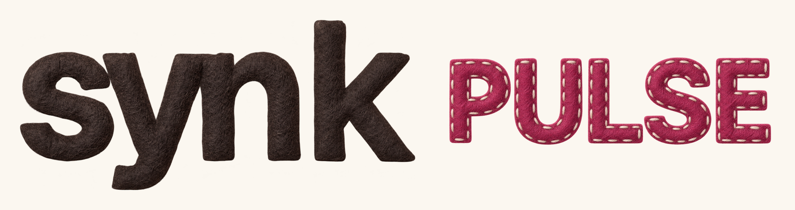
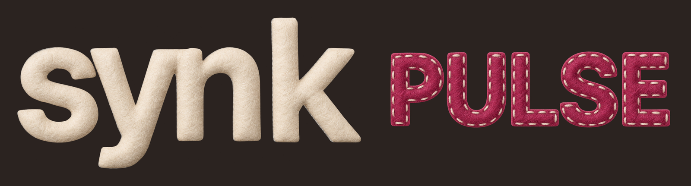

하나의 중심, 서로 다른 성격
SYNK 네 글자는 밝은 바탕에서 Ink #2B2320, 어두운 바탕에서 Paper #FBF7F0입니다. LAB 코랄·SHIFT 파랑·PULSE 베리는 그대로 둡니다.
펠트는 유지하고, SYNK의 실땀만 덜어냅니다
2026-09-10 사용자 승인으로 단독 로고와 사업명 조합 모두 SYNK 네 글자의 스티치(실땀)만 제거합니다. 기존 펠트 섬유·두께·그늘·중립색, 솟은 k와 내려가는 y, 자간과 글자 형태는 유지합니다. LAB·SHIFT·PULSE 사업명의 고유색과 기존 스티치는 그대로 둡니다.
이 킷은 사진형 펠트 킷입니다. SYNK는 무실땀, 사업명은 스티치를 유지하며 같은 펠트 재질로 이어집니다. 실땀 제거를 표면의 평면화나 사업명·마스코트·UI의 스티치 제거로 확대하지 않습니다.
기존 사진형 색 변형의 출처는 GPT Image 2.5 Sunburst입니다. 이번 SYNK 무실땀 표면은 내장 ImageGen으로 편집한 뒤 기존 캔버스에 맞추고, 기존 알파(투명도)를 다시 적용해 바깥 윤곽을 유지했습니다. 표면 편집과 색 변형의 제작 이력은 구분합니다. 사진형 파생물을 원본과 픽셀·벡터가 동일한 도형으로 설명하지 않으며, 정확한 도형 재현에는 정밀 SVG를 사용합니다. 새로운 서체로 로고를 재조립하지 않습니다.
공간과 크기
공통 SYNK 너비를 1로 볼 때 사업명 사이 여백은 0.075, 사업명 실제 대문자 높이는 0.222를 기준으로 맞췄습니다. 글자 모양에 따라 광학 중심을 보정했습니다. 압축·늘이기·외곽선·반짝이는 금박 효과는 추가하지 않습니다.
밝은 바탕을 기본으로
어두운 바탕에서도 사업명은 기존 색입니다. 색 몸체가 흐려지는 작은 자리에서는 밝은 패널에 전체 로고를 놓으세요. 사업명만 임의로 밝히지 않습니다. 촘촘한 피드에서는 로고 확대보다 여백과 내용의 명료함을 우선합니다.
파일 선택
배치용/에 네 조합 × Ink·Paper PNG 8개가 있습니다. 사진형 배치 원천 PNG 2개는 기존 가로 3840px 캔버스를 유지합니다. 이번 표면 편집 원천 이미지는 1804×872px와 1788×880px이며, 배치 파일의 3840px를 처음부터 4K로 생성한 표면 디테일의 증거로 설명하지 않습니다. 정밀 SVG 2개는 기존 도형을 그대로 사용하는 크기 자유 원본입니다. 카드와 영상에는 배치용 WebP를 사용합니다. 생성 원본과 기존 컬러판은 보존합니다.
사용할 파일을 배치명세와 대조하고, SYNK의 실땀 제거와 펠트·두께·그늘·형태 보존, 사업명의 색·스티치 보존을 각각 확인하세요. 밝은/어두운 배경과 실제 표시 크기에서 읽힘·알파·여백을 비교합니다. 파일명이나 이 안내의 갱신만으로 실제 로고·기존 제작물·게시물 전체의 반영이 끝났다고 판단하지 않습니다. 실제 적용 범위는 해당 결과물의 검증 기록에서 확인합니다.
같은 명품화 기준
과장된 약속 대신 구체적 제공물을 보여줍니다. 장식은 한 장면에서 하나의 의미를 맡습니다. 소품으로 글을 가리지 않으며, 작게 올려도 읽히는 본문·일관된 색·완성된 자료·정직한 답변이 한 브랜드를 만듭니다.
원본 내려받기
{kind=link}
{kind=link}
{kind=link}
{kind=link}
SYNK


SYNK LAB


SYNK SHIFT


SYNK PULSE

